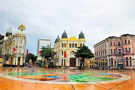

Sobre o Marco Zero
O Marco Zero é um dos pontos turísticos mais emblemáticos da cidade do Recife. Localizado no bairro do Recife Antigo, ele marca o ponto de origem da cidade. Ao visitar o Marco Zero, você pode desfrutar de uma vista incrível para o mar e para a Praça Rio Branco, que frequentemente recebe eventos culturais e musicais.
Imagem do Marco Zero
Atrações Próximas
Próximo ao Marco Zero, você encontrará várias atrações turísticas, como o Cais do Sertão e o Paço do Frevo. Essas atrações oferecem uma imersão na cultura e história da região.
Outros Pontos Turísticos
Clique aqui para conhecer mais pontos turísticos do Recife Antigo.